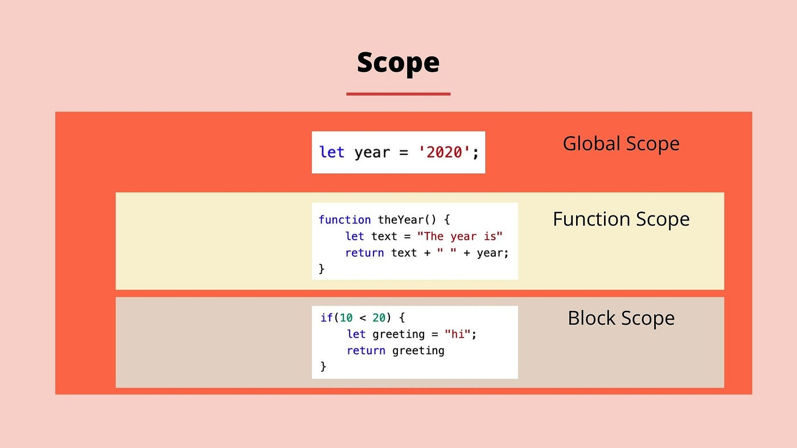

Deber 2: Funciones
Objetivo: Crear una página web explicando la teoría de funciones con ejemplos prácticos e imágenes ilustrativas.
⬅ Volver al inicio📋 Actividades a realizar
- Explicar qué son las funciones en programación.
- Mostrar ejemplos de diferentes tipos de funciones.
- Incluir imágenes explicativas y diagramas.
- Realizar dos ejercicios prácticos.
- Grabar un video explicando el paso a paso de cada ejercicio.
- Incrustar el video en la página.
💡 Tip: Explica claramente los parámetros, el valor de retorno y el scope (alcance) de las variables.
1) ¿Qué son las funciones en programación?
Una función es un bloque de código reutilizable que permite ejecutar una tarea específica. Las funciones reciben datos llamados parámetros, realizan un proceso y pueden devolver un valor de retorno.
🖼️ Diagrama de una función

El diagrama muestra cómo una función recibe parámetros, ejecuta un proceso interno y devuelve un valor de retorno.
2) Tipos de funciones
2.1 Función declarada
function saludar(nombre) {
return "Hola " + nombre;
}2.2 Función flecha
const sumar = (a, b) => {
return a + b;
}🖼️ Scope de las variables

La imagen representa el scope global, el scope de función y el scope de bloque, mostrando dónde existen las variables.
3) Ejercicios prácticos
Ejercicio 1: Área de un rectángulo
function areaRectangulo(base, altura) {
return base * altura;
}Ejercicio 2: Par o impar
const parImpar = (n) => {
return (n % 2 === 0) ? "Par" : "Impar";
}